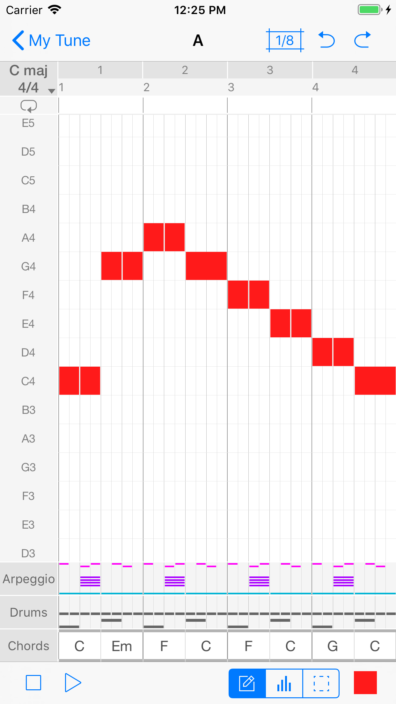

Your
Music Composition Lab
Composing music can be much more simple and efficient if your workflow and toolset help you to focus on the essential elements of music. Tune Maker teaches you the fundamental ingredients of music and gives you all necessary tools to perform your tune-making experiments.
